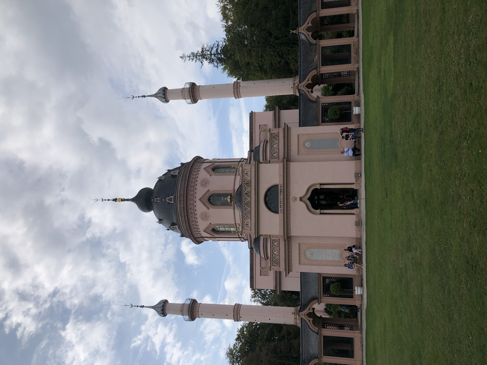
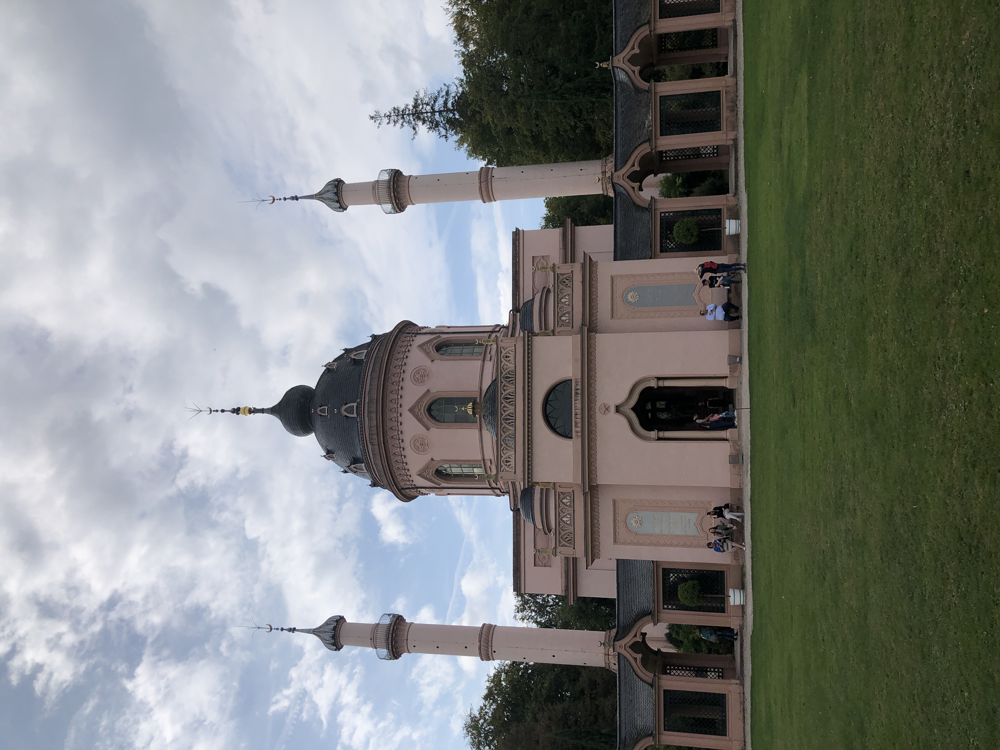
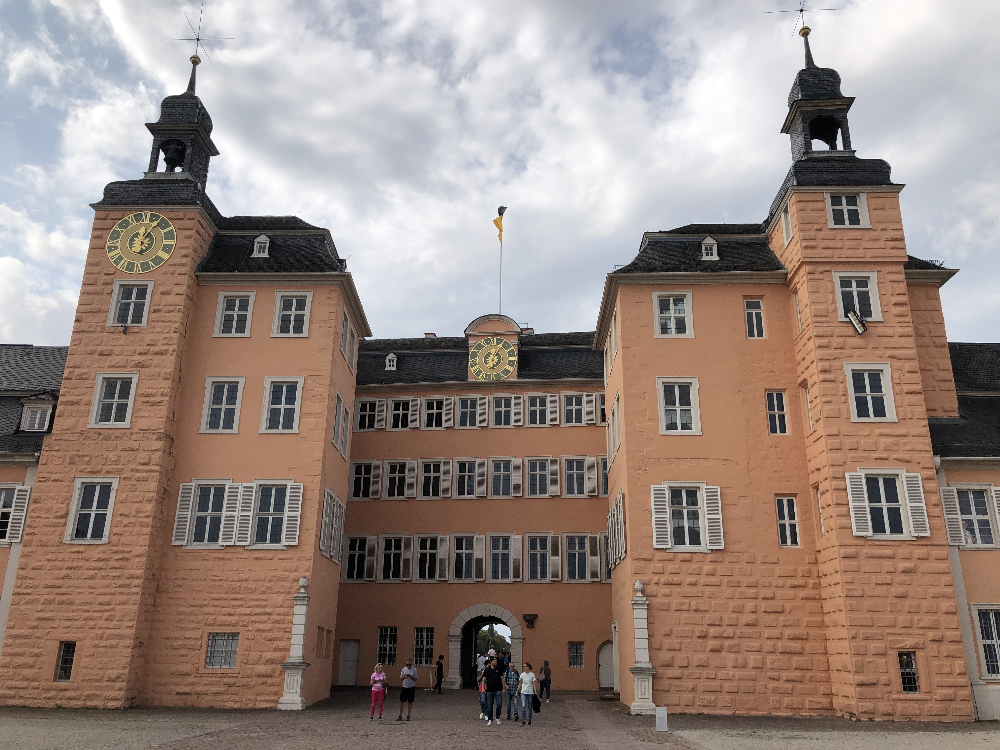
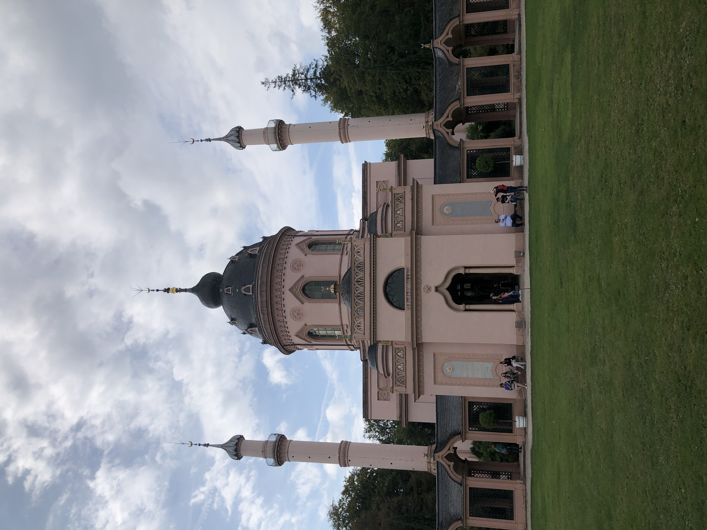
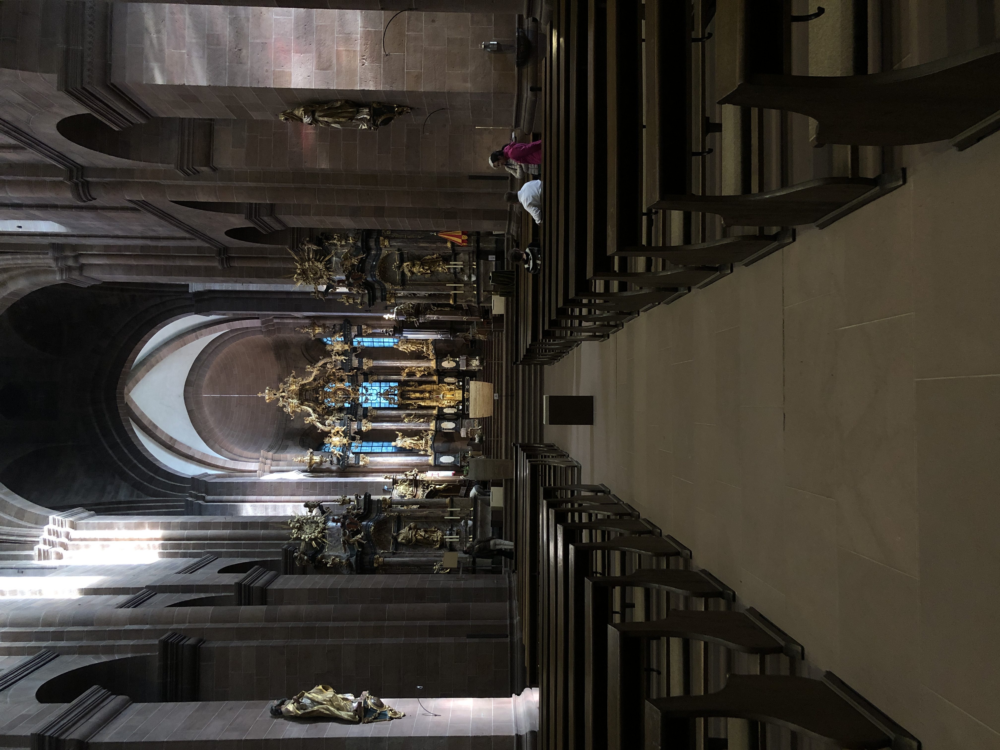
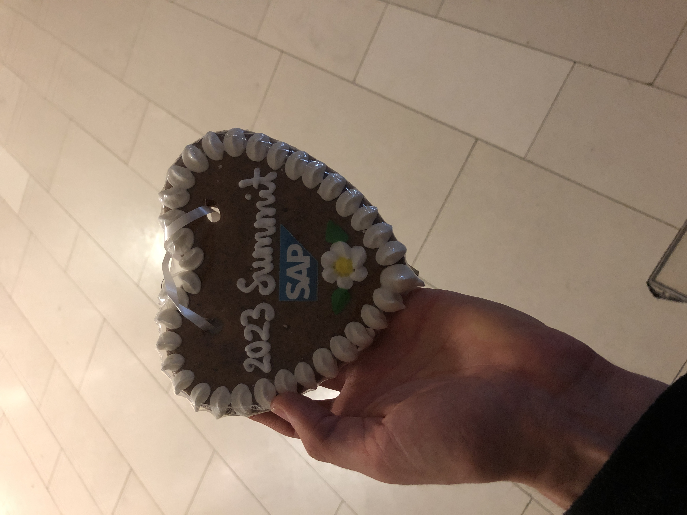
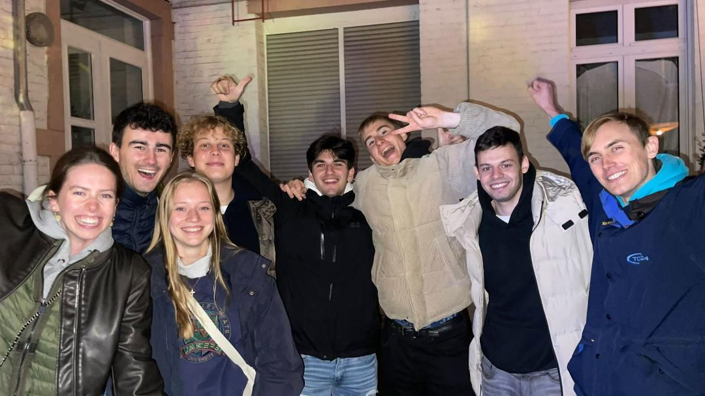
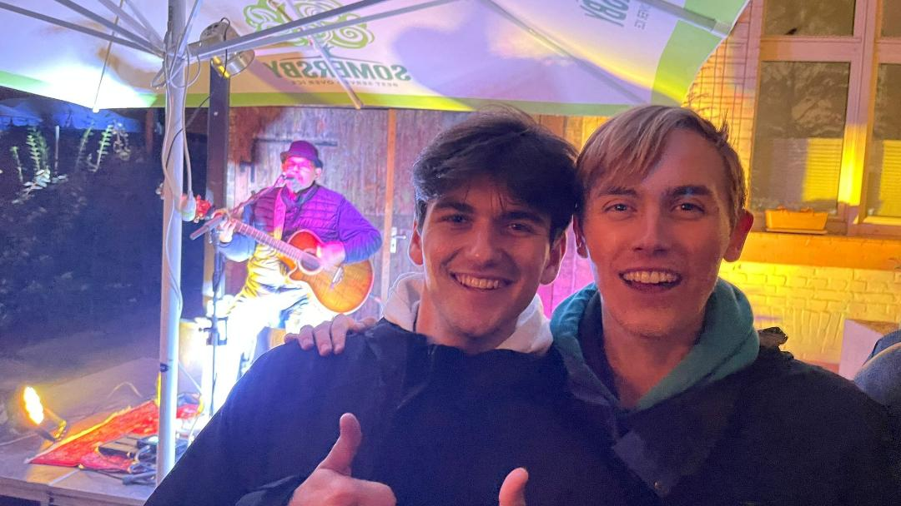

I went to this political discussion group (in English, but German before and after), and the chosen topic by Alyssa, a professor from Columbia university, was Kamala Harris. I would come to attend these sessions most weeks and they were always insightful, due to the breadth of opinions and well chosen and crafted sessions. I really enjoyed taking a backseat, even afterwards, when we visited a local bar for a drink.
On Tuesday 3rd October, it was a Feiertag (national holiday), namely reunification day: on this day in 1990, the German Democratic Republic (East) joined with the Federal Republic of Germany (West). This date marks the official completion of the reunification. I was informed of alternative suggested date for this Feiertag: the 9th November. On this date in 1989, the Berlin wall came down and it coincided with the Proclamation of Germany, in 1918, and the defeat of the Hitler's Munich Putsch , in 1923. However, this date is not celebrated because, on this day in 1938, was the Kristallnacht, a horrific pogrom against Jews.
I spent some time researching and reflecting these events and also visited the nearby Schloss, called Schwetzingen.
It's a wonderful palace, with sprawling gardens, containing numerous "smaller" houses and sculptures.

In the evening, I attended dance.
Fun fact: Pygmy goats have a sort of accent: young goats, who are raised together, have a similar calling. Goats' milk is easy to digest and is used more globally than cows' milk. Finally, goats rarely cause overgrazing issues.
On Wednesday, Linus, Axel's son, gave me an excellent tour of the fire station and afterwards I had a drink with Moritz and Leon. On Thursday, I attended a drill and later had drinks with Petra and Karl-Heinz (my landlady and landlord).
Over the weekend, I had a visit from my parents. My boss kindly booked us a table at the local tapas bar La Torgua! We had a delightful meal, plus some free Hugo :) On Saturday, I showed M&D the sights of Heidelberg, such as the mighty Schloss, Philosphie Weg, Gelato Go, the Alt-Brücke (old bridge) and the Apotheke museum (found within the schloss courtyard). And of course, the really big barrel, only outsized by the Bad Dürkheim Fass — which contains a restaurant! Instead of lunch at one place, we shared three dishes, each one from a different place: currywurst, tabbouleh salad and some really good lemonade.
In the evening, we went to the Schnitzelhaus, where you could choose from at least 15 different sauces and styles, and we even had the same smiley waitress from my visit there on my first day.
On the Sunday, we visited the Botanical Gardens and then headed to Dönapolis for a quick bite before we said our goodbyes :( In the evening, I played tennis with Karl-Heinz and he gave me some serving tips.
On Monday, I finished slightly early and played tennis with Karl-Heinz and his sister: first I practiced my service but then we played together, rotating who was alone. Thanks for including me :) I seemed to struggle playing doubles, perhaps because I put extra pressure on myself to not "let down" my team mate or, perhaps, I relaxed too much, feeling false security in having someone beside me, to "help out" 😂 Es hat sehr viel spaß gemacht (it was very fun)! I then worked late on the leader board class diagrams.
On Tuesday, I setup my bank account and had an evening bike ride, along the lovely path to Heidelberg/Kircheim station, because I missed the train to get to Tanzkurs (dance classes). Afterwards, I spent a lot of time educating myself on the Israel-Hamas conflict. This other site has very useful information and ways to help. My sincere condolences go to the people in the region, whether they are Israeli or Palestinian, who have lost loved ones and are suffering. It is truly saddening to see such a large, violent conflict and I hope that it quickly, peacefully comes to a halt. For many, life will sadly never be the same, but I hope measures are taken to enable constructive progress between all parties so that the current and future generations never have to experience anything like this again.
On the Wednesday, I had a good day in the office and in the evening I played some games with Henry and my chums from Discord. On the Thursday, I did a little yoga, a small workout and then a nice long walk. Next, on the 13th, I went to the gym (mainly to row), played online a bit and then I watched Rick and Morty with James.
On the Saturday, I briefly strolled around the local Kerwe (or Kirmes, depending on where you are from), a small annual festival, which takes over the whole town center. I stopped by the main stage and spoke with this friendly lady about our experiences in moving abroad, because she moved to Germany to study German, and then stayed after finishing her studies. We chatted for a bit and then we went our separate ways, wondering around the market.
I went for a jog and then met with Feng and Sruthi, who previously lived in the Airbnb with me, to look around some of the food stands! We tried Lassi, Germknödel and Crepes, which were served on a plate (which turned out to be a waffle!). We watched a few bands, but then headed back for a bit. But not after trying these lip-smackingly good Gözleme: a Turkish bread filled with spinach!
I returned to meet with Linus, where I met some of his lovely friends and sampled some of the local Pils and Weinschorle (wine spritzer). It was a really great evening and I noticed myself talking quite a bit of German (albeit badly). I chatted with Leo, Leon, Moritz and later met Nico (a friend of Leo), a true explorer and yes-man (whom I am still chums with to this day)!
Fun fact(s): The Eland can travel for 50km a day in search of food! They can survive long periods without drinking, extracting the necessary water from their food. Finally, their legs make a clicking noise, because they have a knee tendon, which twangs against bone (the sound of this "twang" indicates fitness and size).
On the Sunday, I read lots of news, practiced my German, walked around the Kerwe and briefly listened to this great duo Tara and Sten. I then bumped into Leo and later Nico. I joined the latter, and his family, in watching Oli Roth, who played music ranging from Led Zeppelin and Tom Petty to the Buena Vista Social club and Del Amitri, often building tunes and backing tracks live, using pedal equipment. Nico's family kindly shared a Langosh with me, a Hungarian fried bread, topped with ham and cheeeeeese. Afterwards, I went for a night bike ride to Sandhausen, racing to catch the train back to Walldorf.
I enjoyed a warming Pfefferminztee and then called it a day! What a week :)
I went to the Kerwe at the Feurwehr and tried Schweinhaxe (pork knuckle) with bread and sauerkraut, plus a healthy amount of Dopsi , a scrumptious mixture of Asbach (Brandy) and cola. I had a chat with lots of local fire folk and enjoyed the altering Schlager band and marching band. Schlager is the name for German party pop. I danced with some people and then strolled home.
The next day, I had a big meeting with Axel and headed to the Gym with Lisa, another student working for Axel, who is alternating between work and study. I also met Lenard, who would later become my room mate! On the 18th, I had a very, very productive morning and a relaxed evening calling the family and then later calling James, for a quick R&M episode.
On the Thursday, I had lunch with Moritz and his team; after work, I attended a HIT class with Lisa. It was led by a man who I came to call Mixtape Man, because every week the same "Fitness tracks 1" CD would play and we would do the same moves, in time with the music. I would also continue to smile during the cooldown, because the mixtape isn't quite long enough for the hour, so we have "Your Latest Trick" twice 😂The first session was awesome but very tiring.
On the 20th (Friday!), I went with Lisa and Jonas for a Mexican meal and then a drink at this charming Irish pub. Words can't describe how great this evening was, because it was one of the first nights out where I was really relaxed and didn't try too hard.
The next day, I worked in the morning and then headed to Worms, the city where, in 1521, Martin Luther (a seminal figure in the Protestant Reformation) refused to stop his teachings at the Diet of Worms. A 'Diet' is a legislative congregation, in this case held by the Holy Roman Empire (of the German Nation)
Whilst many people in Mannheim probably looked to the East, they probably weren't blinded by the sun, and definitely didn't notice the geezer on a bike (me), merrily cycling past sights, such as the mighty water tower, Jesuit church and Schloss. Mannheim is an exciting city, with lots going on but has an infuriating amount of glass (although not as much as Köln/Cologne!). I had a long way to travel, so by midday I departed, making my way through the pretty countryside, along splendid cycle paths, to the jaw-dropping Speyer! I indulged in a Brezel (3/5), then a tiramisu ice cream (6/5), and then headed to three churches, all wonderful in their own way.
The "small" one
The medium one
Inside the medium one
One volunteer keenly explained the meaning and history of the intricate wall paintings and windows, lining the interior of the Gedächtniskirche, which had red and green tiles on the outside!
I then grabbed a bus back, cooked Semmelknödel (semolina dumplings) and had a great call with the Reids.
On Monday, I attended the discussion at the DAI (Deutsch-Amerikanisches institute); the topic of discussion was the speech Biden gave in Tel Aviv, located on the Israeli coast, North-West of Jerusalem, about the Israel-Hamas conflict. This was a really important discussion and I learnt much more about the history of the region, the reasons for tensions, people's opinions on the conflict and about suggestions to maintain peace in the region. We also talked about how different countries view the conflict and discussed views on Biden's speech.
On Tuesday, I went to the dance and also called home 👍 Then, the following day, in the evening, I went to the Marktstube with Michael, my long-term room mate. We both had a dark beer, he had a Wurst and I had Goat's cheese with roasted peppers, onion, olives and tomatoes. We had a lovely meal and continued chatting long after we had finished eating.
On Thursday, I had the final Soul Chana Masala post HIT session, as well as indulging in a gingerbread heart. I also met Lisa's mates at lunch including Artur, who shared a passion for fantasy novels. Next, on the evening of the 27th I went to an fancy-dress, SAP party, in Mannheim. I went alone, but made a friend there and enjoyed the costume competition. I ran across half the city to catch a tram to cross the other half of the city to get to the station, only to find the train delayed 😂
In the day, I worked a bit and chatted with the famalam. And in the evening, I was invited to join Nico in visiting the Mannheim Nachtwandel, an annual street party held North-West of the main station, by the docks, and I cordially accepted. The streets were closed and filled with food and drink stands; the restaurants pushed back tables and chairs and proudly served their best dishes, at great speeds; smaller side plazas held small concerts; colourful lights lit the pretty architecture; and by the docks there were big bands and dance groups performing.
 We had a fabulous evening: Nico introduced me to some of his mates, we visited the Mannheim uni beforehand, I got to try my first Glühwein (we even saw Oli Roth again). On the way there and back, I had nice chats with Nico's lovely parents and they recommended some sights and regaled me with various cool adventures, including the time they saw Sting in Bruchsal! Oh, and we had a delicious falafel Maqali wrap too!
Fun Fact: Giraffes have seven vertebrae but each one is 25cm long! Their hearts pump 60 litres of blood around their body, every minute, at a pressure twice that of a human (I guess they need it for that 2 metre neck); to prevent sudden pressure changes in the brain, when lowering and raising their head, they have lots of one-way valves and elasticated blood vessels 😲
On Sunday, I had a lovely long call catching up with Alec, I researched some cool destinations to visit, did some cooking (a nice spicy and herby carrot, pea and egg dish), some cleaning and some prep for flatbreads. I then walked to Reilingen, a town West of Walldorf, and finished listening to the "The Miseducation of Lauryn Hill", which Will recommended. On the bus back, I practiced my German and upon returning made the flatbreads!!
The 30th, was a tough Monday, but the gym session was brilliant: started with stair machine for 10-15 minutes; rowed for a bit; ran at increasing speeds for 8 minutes; and did weights. Lunch was also fabulous. The discussion group was cancelled so I just chilled a bit, watched some stuff, read some stuff and did a little work on the website.
I attended a brilliant dance class, which was a bit quieter but had a great evening!
Home September November